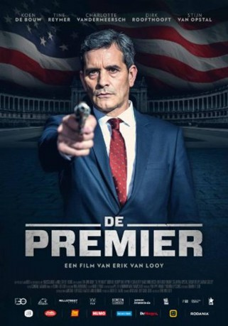

IMDB-Wertung: 6.3 / 10
IMDB-Wertung: 6.3 / 10  Metascore:
Metascore: 
The Belgian prime minister is kidnapped. If he wants to be released, he must murder the American president.
 IMDB-Wertung: 6.3 / 10 Metascore:
The Belgian prime minister is kidnapped. If he wants to be released, he must murder the American president.
Jahr: 2016
Dauer: 115 Minuten
FSK:
Land: Belgien Studio: Aya ProTonspuren:
Untertitel:
Auflösung: 1080p (1920x808) Größe: 3430 MB
Genre: Thriller
Regisseur: Erik Van Looy
Drehbuch: Andres Veiel
Soundtrack:
Darsteller:
 Adam Godley als Chief of security
Adam Godley als Chief of security Saskia Reeves als President
Saskia Reeves als President Nathan Wiley als Secret service agent #1
Nathan Wiley als Secret service agent #1 Truus de Boer als Euro Minister, F
Truus de Boer als Euro Minister, FDatei: X:\2016(N-Z)\Protokoll - Mord auf höchster Ebene, Das (2016, FSK, 1920x808).mkv seit 29.11.2017
Festplatte: HD 2016(A-Z)
 Es gibt insgesamt 182 Filme in der Gruppe '2016(N-Z)'
Es gibt insgesamt 182 Filme in der Gruppe '2016(N-Z)'